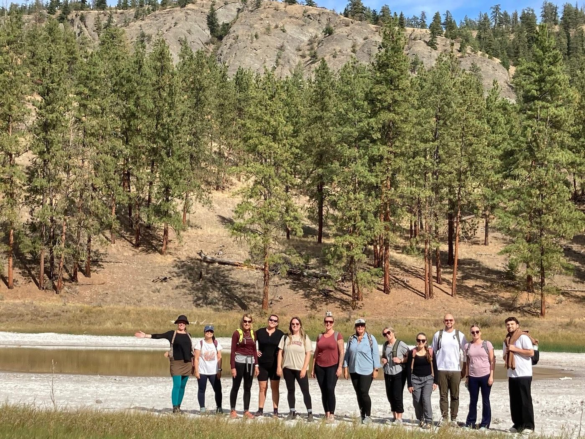

About Desert Sun
For over 30 years, we have been a cornerstone of the South Okanagan — providing free, compassionate programs that empower people of all ages.
Our Mission and Vision
Two guiding statements shape every decision we make and every program we offer.
We facilitate supportive programs to empower people of all ages to experience an enhanced quality of life in their homes, schools, and communities.
We aim to be a leading-edge, dedicated, professional organization providing responsive programs to meet the diverse needs of our communities.
“Our work is all about care. Care and believing that tomorrow really can be better than today.”
— Marieze Tarr, Executive Director, Desert Sun CounsellingOur Values
Five core values shape how every staff member, volunteer, and board director shows up for the people we serve.
Motivates people to help others with warmth and genuine care.
Everyone acts according to the values, beliefs, and principles they claim to hold.
Awareness of and sensitivity to the emotions of others.
We acknowledge differences and provide the support needed for equal access and opportunity.
We start where each person is — without judgment, without conditions.
Our History
Desert Sun Counselling and Resource Centre has been serving Oliver, Osoyoos, Okanagan Falls, and the surrounding South Okanagan for over 30 years. From a small and humble start, we have grown into an organization providing a wide range of programs and supports to people of all ages.
Desert Sun was founded through the vision and singlehanded dedication of Oliverite Terry Johnson, who saw a critical need in the community and worked tirelessly to meet it. The organization began as an alcohol and drug counselling agency, providing support to those struggling with addiction in the South Okanagan.
Desert Sun passed addictions counselling responsibilities to Interior Health and broadened its focus to address other urgent community needs. Stop the Violence programming for women, the PEACE Program for children who have witnessed family violence, and men’s counselling were all added to our services during this period.
Responding to the evolving needs of the South Okanagan, Desert Sun expanded in multiple grassroots directions — adding seniors’ programming, parenting supports, and community resources. All programs were kept free of charge and open to self-referral, ensuring no barrier stood between people and the help they needed.
Desert Sun’s main administration office relocated from Main Street in Oliver to a modern, purpose-built office space on the Southern Okanagan Secondary School campus. The Osoyoos office on Main Street continues to serve the southern end of our community.
Desert Sun now offers over 20 programs serving people of all ages across the South Okanagan. Our community fundraiser — the Empty Bowls and Baskets campaign — helps sustain programs that government funding alone cannot cover. Our work is possible because of the generosity of our funders, volunteers, and community supporters.
Board of Directors
Desert Sun is guided by a passionate team of community builders who bring dedication, transparency, and accountability to everything we do.
“Our board is dedicated to ensuring our organization is helping people in a transparent, accountable, ethical, and trustworthy way.”
— Maureen Doerr, Board Chair, Desert Sun CounsellingInterested in contributing your skills and community knowledge to our board? We welcome passionate community members to apply.
Learn About Joining Our BoardOur Staff
Desert Sun’s heart and hands are its staff: a group of caring, committed, and engaged change-makers who bring professional expertise and personal dedication to every program they deliver.
Our team includes counsellors, program coordinators, outreach workers, and administrative staff — all united by a shared belief that every person in our community deserves access to the support they need, regardless of their circumstances.
Desert Sun is also an equal opportunity employer. To see current openings and learn more about working with us, visit our jobs page.
View Job Opportunities
Our Volunteers
Desert Sun enormously values the dedication of our individual and group volunteers. Due to the sensitive nature of much of the work we do, volunteers work in specific roles where they can make the greatest difference while the privacy and wellbeing of clients is protected.
Volunteers have been essential to Desert Sun’s community fundraiser — the Empty Bowls and Baskets campaign — and continue to play a meaningful role in the sustainability of our programs.
Volunteer with Us
Be part of what we do
Whether you donate, volunteer, or simply spread the word — every act of support helps Desert Sun continue serving the South Okanagan.